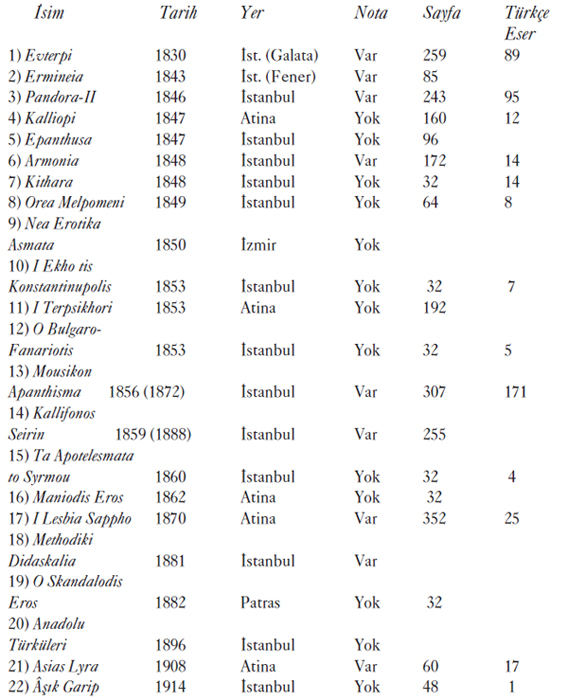

Mousikon Apanthisma (1872) ya da Mecmua-yı Makamat büyük ölçüde
Hâşim Bey Mecmuası’ndan (1864) esinlenmiştir.
a) Formlar ve Eserlerin Muhafazası
Evterpi’de toplam olarak 102 eserin güfte ve notası bulunuyor. Bunların 89’u Türkçe; eserlerin başlığında belirtildiği üzere altısı “Türk nağmeleriyle”, yedisi de “Avrupalı nağmelerle” olmak üzere 13 adedi de Rumca güftelidir. Pandora’ya gelince, tamamı Türkçe güfteli olmak üzere 95 adet notalı eser ihtiva ediyor. Evterpi’deki Türkçe güfteli eserlerin 9’u beste, 67si şarkı ve 13’ü Yürük Semai’dir. Pandora’da ise bu beste formlarından sırasıyla 8, 67 ve 11 tane bulunuyor. İki yayında en çok şarkı bulunmaktadır.
Bu iki kitapta müzik eserlerinin bestecilerinin adı belirtilmiyor. Ancak, Evterpi’deki 65, Pandora’daki 79 adet eserin bestekârını, başka güfte mecmualarıyla karşılaştırarak teşhis edebildik. İki yayında 46 eser ortaktır. Evterpi’deki 24 eserin ve Pandora’daki 16 eserin bestekârını bütün çabalarımıza karşın teşhis edemedik. Bu toplam 40 adet bestenin hiçbiri Pandora’dan sekiz yıl sonra basılan Haşim Bey Mecmuasında yoktur ve hiçbiri ondokuz ve yirminci yüzyılda basılmış herhangi bir antoloji, nota koleksiyonu, müzik yayın ya da dergisinde yeniden görülmemiştir.
Osmanlı/Türk müzik icrası açısından bu 40 eser bütünüyle “unutulmuş” ya da “yitmiş” görünüyor. Hiç kuşkusuz, “neo-bizantin” notadan porte’li nota yazımına transkripsiyonları yapılıp yeniden yazılabilir, “yeniden keşfedilebilir” ve canlandırılabilirler. Ancak herhalde artık bundan sonra bestecileri bilinmeyen “anonim” parçalar olarak çalınmaları gerekir.
Bu “yitmiş” 40 parçanın tamamı da şarkıdır. Bu yitik eserlerin hepsinin ciddi ve ağırbaşlı kâr, beste ya da semailerden daha popüler olan, şarkı gibi daha önemsiz ve hafif olduğu düşünülen bir şiir ve müzik formuna ait olması yalnızca bir rastlantı mıdır? Yoksa bu eser türüne karşı sistematik olarak uygulanmış, Osmanlı/Türk müziğinin (tamamen sözlü olan ve meşk olarak adlandırılan) öğretim ve aktarım sürecine içkin bir seçim mekanizması mı söz konusuydu? Beste ve semai türünde eserler daha çabuk değişen şarkı repertuvarlarıyla karşılaştırıldığında acaba daha “dayanıklı”, daha “korunmaya değer” müzikal biçimler olarak mı algılanıyorlardı? Bu seçimde bestekârların kişisel konumlarıyla ilgili bir ölçüt de var mı?
Her hâlükârda açıkça görülüyor ki, bu Karamanlıca notalı yayınlar ondokuzuncu ve yirminci yüzyılda Hristiyan olmayan (Müslüman) bestekâr ve müzisyenler tarafından hiç kullanılmadılar. Aksi takdirde, bu “yitik” bestelerin birçoğu okunur, çalınır, öğrencilere meşk edilir ve mutlaka Türkçe güfte mecmualarından birinde bulunurdu.
b) Kronoloji
Pandora’nın başlık-sayfasında “bu kitaptaki parçaların elli tanesi yeni bestelenmiştir” ve “diğerleri Evterpi’den alınmıştır” ibaresini görüyoruz. Gerçekten de, dizilen eserlerden 49’u, Pandora için yenidir. Ne var ki, Evterpi’de olmayıp ondan 16 yıl sonra yayınlanan Pandora’da bulunan parçalardan en az dokuz tanesi de Evterpi’nin yayımlandığı yıl olan 1830’dan önce ölmüş bestekârlara aittir. Bunlar arasında Tanburî Mustafa Çavuş (ö. 1750?), Tab’i Mustafa Efendi (ö. 1750?), Ebubekir Ağa (ö. 1745?) ve Sultan III. Selim’e (ö. 1808) ait eserler var. Ne var ki, Pandora’da bulunup, Evterpi’de görülmeyen eserlerin o dönemde yaşayan bestekârlara ait olanlarının bile mutlaka 1830 ile 1846 arasında bestelenmiş olduklarını kesinlikle söylemek mümkün değil.
Evterpi’de bestekârlarını kesin olarak teşhis edebildiğimiz 65 eserin 40’ının bestekârı kitabın yayınlandığı 1830 yılında hayattaydı. Bu nedenle Evterpi bize çağdaş bestekârlar tarafından bestelenmiş eserler için bir terminus ad quem sağlamaktadır.
Aşağıda Evterpi ve Pandora’da bestecisini teşhis edebildiğimiz eserlerin kronolojik dağılımı sunulmuştur.
ESER SAYILARI
Evterpi Pandora
Yaşayan bestekâr 40 47
18. yy 16 22
18. yy öncesi 3 3
Bilinmeyen 3 7
TOPLAM 65 79
Bu kitapların ikisinde de yaşayan bestekârların eserlerine öncelik verildiğini gösteren bu dağılım ilgi çekicidir. Abdülkadir Meragî’ye aidiyeti rivayet edilen bir iki beste içermelerine rağmen, örneğin Itrî (1640?-1712) ya da Hâfız Post (ö. 1694) gibi onyedinci yüzyılın büyük isimlerin eserlerinin ne bu iki kitapta ne de Karamanlıca yayınların herhangi birinde yer almaması ilginçtir. Öte yandan, bu iki notalı yapıtta temsil edilen onsekizinci yüzyıl bestekârlarının büyük çoğunluğu bu yüzyılın son çeyreğinde faal olmuş bestekârlardır. Bunların çoğu da müzisyen/bestekâr Sultan III. Selim’in (saltanatı 1789-1807) musahibi veya onun himayesindeydiler.
Yaşayan bestekârların Evterpi ve Pandora’daki parçaları genellikle şarkıyken, Tanburi Mustafa Çavuş’un az sayıdaki şarkısı dışında, ondokuzuncu yüzyıl öncesi bestekârların eserleri çoğunlukla beste ve semaidir. Bu iki eserde onsekizinci yüzyıl öncesine ait parçaların azlığı da çarpıcıdır doğrusu. “En eski” üç parça Abdülkadir Meragi’ye atfedilen iki semai ve “Hintliler”e atfedilen bir diğer semaidir. Bunların üçü de hem Evterpi’de hem de Pandora’da mevcuttur. Daha sonraya ait ondokuzuncu yüzyıl Osmanlı/Türk güfte mecmuaları ve özellikle Haşim Bey’inkiyle karşılaştırılınca, Evterpi ve Pandora’daki eserlerin kronolojik dağılımının tipik olmadığı anlaşılır. Ne var ki, bu iki mecmuadaki eserlerin sayıca azlığı göz önüne alındığında, bu iki Karamanlıca yayının içeriklerini 1830 ve 1840’larda icra edilmekte olan Türk musıkisi repertuvarını sadık bir biçimde temsil ettiklerini ileri sürmek de doğru olmayabilir.
Evterpi’de bestekârını teşhis edebildiğimiz ve bu kitabın yayımlandığı yıl hayatta olan bestekârlara ait olan 40 adet eserden 11’i İsmail Dede Efendi’nin (1778-1846) bestesidir. Bu çok yüksek oran (11/40 = % 27.5), belki de geleneksel Türk müziği bestekârlarının en büyüğü olan Dede Efendi’nin, ölümünden 15 yıl önce dahi çoktan yerleşmiş bir ünü olduğunu ve muhtemelen zamanının en önde gelen bestekârı olarak tanındığını açıkça gösterir. Dede Efendi’nin Evterpi’nin yayımlandığı yıl olan 1830 yılından önce yaptığı kesin olan bestelerinin listesi aşağıdadır:
1) Rast Beste, Usul: Çenber, “Nâvek-i gamzen ki her dem bağrımı pür hûn eder”.
2) Rast Şarkı, Usul: Düyek, “Üftadenim ey bîvefa”.
3) Rast Nakış Yürük Semaî, Usul: Yürük Semaî, “Oynar yürek terennüm-ü çeng ü çengâneden”.
4) Sabâ Şarkı, Usul: Düyek, “Gûş eyle gel bülbülleri”.
5) Uşşak Şarkı, Usul: Ağır Aksak, “Pür ateşim açtırma sakın ağzım zinhar”.
6) Hicaz Şarkı, Usul: Düyek, “Çoktur gönülde dağ-ı melâlim”.
7) Bûselik Şarkı, Usul: Aksak Semaî, “Zülfündedir benim baht-ı siyahım”.
8) Şehnaz Bûselik Şarkı, Usul: Düyek, “Ben müptelâ oldum sana”.
9) Evcârâ Şarkı, Usul: Aksak Semaî, “Hüsnüne mail gönül ezelden”.
10) Şedaraban Şarkı, Usul: Düyek, “Gözümden gönlümden hayali gitmez”.
11) Nühüft Şarkı, Usul: Aksak Semaî, “Bend oldu dil bir şûh-ı cihane”.
Dede Efendi’nin eserlerinin yaygınlığı konusunda keza Pandora’da da durum aynıdır. Bu kitap yayınlandığında Dede Efendi yeni vefat etmişti. Bestecisini teşhis edebildiğimiz 79 eserin 25’inin bestecisi o sırada hayatta değildi. İşte bu 25 eserin 10 tanesi İsmail Dede Efendi’ye aittir. Dede Efendi’yle aşağı yukarı aynı kuşağa ait fakat daha az tanınmış olan bestekârlar da Evterpi’de temsil ediliyorlar. Örneğin, Kemanî Rıza Efendi’nin (ö. 1852) Evterpi’de altı bestesi vardır. Tanburî Numan Ağa’nın (ö. 1834) altı, Şakir Ağa’nın (1779-1840) da beş eserinin notası veriliyor. Evterpi, Sultan II. Mahmud’un (saltanatı 1808-1839) bestesi olan üç şarkıyı da içeriyor. Evterpi’de bestecisini kesin olarak saptayabildiğimiz 40 eserin büyük çoğunluğu altı çağdaş bestekâra aittir. Pandora ise, daha geniş bir bestekâr yelpazesine sahiptir, ancak çağdaş olanlar yine çoğunluktadır.
Evterpi, bize ayrıca oldukça genç yaştaki, ve büyük bir olasılıkla İstanbul’daki müzik dünyasına o sıralarda yeni girmiş iki bestekârın bazı eserlerinin besteleniş tarihlerine dair de ipuçları sağlamaktadır. Bu genç bestecilerden birisi Kazasker Mustafa İzzet Efendi’dir (1801-1876). Mustafa İzzet Efendi’nin 1830 yılında yayınlanan Evterpi’de bir şarkısının bulunması, bestelerinin daha 28 yaşındayken İstanbul’daki çeşitli müzik çevrelerine yayıldığını ve kabul gördüğünü gösteriyor. Bu şarkı (Eviç makamında ve Aksak usulünde, “Bir sebeple gücenmişsin sen bana” güfteli şarkı) onun en tanınmış bestelerinden birisidir ve bugün dahi sık sık icra edilmektedir. Bu şarkının 1829 yılından önce bestelendiğini, Mustafa İzzet Efendi’in bu tarihte hac için Mekke’ye gittiğini ve bir süre dönmediğini de bildiğimiz için, artık kesin olarak söyleyebiliyoruz.
Dönemin bir diğer genç bestekârı olan Dellâlzade İsmail Efendi (1797-1869), İsmail Dede Efendi’nin öğrencisidir. Yukarıda sözünü ettiğimiz Mustafa İzzet Efendi’yle birlikte, Evterpi’de bir bestesinin notası (Müstear makamında bir Nakış Yürük Semaî, güftesi “Sana dil mâh-ı tâbânım yakıştı”) yayınlanmış olan en genç bestekârlardan biridir. Bu nedenle, onun da 1830’ların başının İstanbul’unda müzik dünyasında iyi tanındığını, eserlerinin okunup çalındığını varsaymak durumundayız. Dellâlzade’nin Evterpi’deki bu Yürük semaîsi Rauf Yekta Bey tarafından 1925’te Batı notasıyla yazılmış ve Darülelhan Külliyatı içinde yayımlanmıştır. Bu eser bugün de klâsik Müstear Fasıl’ın bellibaşlı parçalarından birisi olarak hâlâ icra edilmektedir. Onaltı yıl sonra yayımlanan Pandora’da ise, Dellâlzade’nin Evterpi’de bulunan Müstear Yürük Semaî’sinin yanı sıra Arazbâr Bûselik ve Eviç Bûselik makamında iki de şarkısının notası yayınlanmıştır.
Diğer yandan, Armonia’da (1848) 1840’lı yılların bir başka “genç” bestekârının, Zekâi Dede’nin (1824-1897) birkaç bestesinin besteleniş tarihi hakkında benzer ipuçları buluyoruz. Armonia’nın 14-15. sayfalarında Zekâi Dede’nin bir eserinin notası veriliyor: Hisar Bûselik Beste, Usul: Çenber, “Zahm-ı sinem hançer-i zerkâr bilmez kim bilir”. Rauf Yekta Bey, hocası Zekâi Dede’nin biyografisinde, onun İstanbul’dan Kahire’ye gitmek üzere 1846 yılında ayrıldığını9 ve Kahire’de altı yıl kaldığını anlatır. İsmail Dede Efendi’nin bir başka öğrencisi olan Zekâi’nin, oldukça genç sayılacak bir yaşta hocası Dede Efendi sayesinde yukarıda sözünü ettiğimiz Dellâlzade İsmail Efendi’nin de aralarında bulunduğu önemli bir müzisyen, müzik hocası ve bestekâr çevresine girdiğini de biliyoruz. Böylece kısa zamanda bestelerini sunup yayabileceği uygun bir çevre bulmuş oldu. Daha yirmili yaşlarındayken Zekâi Dede belli olgunlukta bir bestekâr olarak görülüyordu ve yapıtları İstanbul’un müzik çevrelerinde kulaktan kulağa dolaşmaktaydı. Onun Armonia’da verilen eserinin bizlere asıl söylediği de budur.
Bu nedenle 1846 yılını Zekâi Dede’nin bu Hisar Bûselik bestesi için bir terminus ad quem olarak kabul etmeliyiz. Yani bu eser bu tarihten sonra bestelenmiş olamaz. Bu noktada, şu varsayımı da ortaya atabiliriz; Zekâi Dede’nin aynı Fasıl’ın bir parçası olan Hisar Bûselik makamındaki diğer yapıtları (bir diğer Beste ve biri Aksak, öteki Yürük iki Semaî) da 1846 yılından önce bestelenmiş olabilir. Ancak, bu varsayımı doğrulayacak belgelere sahip değiliz.
En çok sayıda nota içeren yayın olan Mousikon Apanthisma (1872) da aynı kronolojik ve tarihsel kaygılarla taranabilir ve bazı besteleri takriben de olsa tarihlendirme yoluna gidilebilir. Örneğin, bu derlemede, 1872 yılında henüz hayatta olduğunundan emin olduğumuz Hacı Arif Bey’in 11, Nikoğos Ağa’nın sekiz, Rıf’at Bey’in altı, Lâtif Ağa ve Şivelioğlu Yorgaki’nin de beşer adet eserinin notası bulunuyor. Dolayısıyla, Mousikon Apanthisma’da yer alan bu eserlerin 1870’ten sonra bestelenmiş olmaları da pek zayıf bir ihtimaldir. Sözünü ettiğimiz bu besteciler hakkında gerçekten anlamlı biyografik ve müzikolojik araştırmalar yapılacağı zaman, eserlerini kesin bir biçimde tarihlendirmek elbette önemli olacaktır.
Evterpi ya da Pandora’da yer alan bazı eserler, Türk musıkisinin birtakım özensiz biyografik kaynaklarında (özellikle de Yılmaz Öztuna’nın “Büyük Türk Musikisi Ansiklopedisi”nde) sık sık yapılmış kronoloji yanlışlarını düzeltmek için de yardımcı olabilirler. Örneğin, 1846 yılında yayınlanan Pandora’da Markar Ağa’nın üç şarkısı bulunuyor. Bundan bu Ermeni müzisyenin 1840’lı yılların başında, Pandora gibi epey sınırlı bir alanı olan bir güfte koleksiyonunda üç bestesi yer alacak kadar iyi tanınıyor olduğu sonucunu çıkarabiliriz. Öte yandan, Markar Ağa hakkında, Zekâi Dede’ninkine benzer biçimde sıradışı bir müzikal yeteneğe ve erken gelişmişliğe sahip olduğunu gösteren destekleyici ve anlamlı başka biyografik bilgimiz yok. Bu nedenle Markar Ağa’nın, Türk musıkisinin bu sıkça kullanılan ansiklopedik kaynağının verdiği 1880 gibi çok geç bir tarihte öldüğünü ileri sürmek olanaksız görünüyor.
Bu kaynakta verilen biyografik bilgilerin ve kronolojinin her zaman büyük bir kuşkuyla karşılanması gerektiğini biliyoruz. 1848’de yayınlanan Kithara’da doğum tarihi bu ansiklopedik kaynak tarafından10 1831 yılı olarak verilen Hacı Faik Bey’in bir şarkısı var. Dolayısıyla Hacı Faik Bey’in Öztuna’nın verdiği doğum ve ölüm tarihleri de daha ciddî bir biçimde teyite muhtaçtır.
Aynı yorumlar 1830 yılındaki Evterpi’de birer şarkısı bulunan ve Türk musıkisine dair aynı ansiklopedide ölüm tarihleri sırasıyla 1880 ve 1890 olarak gösterilen Osmanlı/Türk müziğinin iki Rum bestekârı, Şivelioğlu Yorgaki ve Usta Yani için de yapılabilir. Bu ölüm tarihleri bizce büyük bir ihtimalle gerçek dışıdır, çünkü bu tarihlerde vefat etmiş iki bestecinin daha 1830 yılındaki bir müzik derlemesine bestelerini dahil ettirecek kadar tanınmış olmalarına pek ihtimal verilemez. Bütün Karamanlıca müzik yayınları daha sıkı bir karşılaştırmalı incelemeye tabi tutulurlarsa, bu tür tarihsel ve kronolojik yanlışların literatürden ayıklanması için çok yararlı olurlar.
Sonuç (Araştırma Gündemi)
Karamanlıca müzik yayınları bizzat kendileri için değil, Osmanlı/Türk müziği tarihine ışık tutmada bize yardımcı oldukları için dikkatimizi çekti. Öte yandan, şimdiye kadar bilinmeyen Karamanlıca yayınların bundan sonra keşfedilmeleri de pekâlâ mümkündür.
Gelecekteki araştırmacıların kanımızca atmaları gereken ilk adım Karamanlıca yayınlardaki bütün notaların yeni-bizantin notadan bugün kullandığımız porteli notaya ayrıntılı bir transkripsiyonun yapılması olmalıdır. Bu kolay bir iş değildir. Gerçekten de bu yayınlarda her türden binlerce müzik eserinin notası mevcuttur ve bu eserlerin yarısından fazlası Türkçe güfteli eserlerdir.
Evterpi ve Pandora örneklerinde yakından gördüğümüz gibi, bu eserlerin çoğu kitabın yayınlandığı tarihte hayatta olan bestekârlara aittir. “yeni-bizantin” notaların transkripsiyonları bize, bu nedenle, bu yapıtların yaratılmalarından hemen sonra nasıl icra edildikleri konusunda çok önemli ipuçları verecektir. Bu notalar kronolojik olarak kaynağa yani besteciye daha yakın oldukları için yapılacak bir transkripsiyon, bize o eserin orijinaline daha yakın bir versiyonunu veriyor olacaktır.
Osmanlı/Türk müzik evreninde müzik eğitimi ve repertuvarın aktarımı genellikle sözlü olarak, teke tek, ustadan çırağa ve meşk adı verilen yöntemle yapılırdı11. Bunun bireysel müzisyene ve icracıya sağladığı göreli icra özgürlüğü de bu eserlerin zaman içinde bir ölçüde değiştirilip dönüştürülmesine yol açardı. Karamanlıca yayınlarda bulunan bazı geleneksel Osmanlı/Türk musıkisi eserlerinin porte’li Batı notasıyla ikinci kez yazıya dökülmesi ise ancak yarım yüzyıl sonra, ondokuzuncu yüzyılın bitiminde ve yirminci yüzyıl başlarında mümkün oldu.
İki yazım arasındaki karşılaştırma, ondokuzuncu yüzyıl boyunca eserlerin sözlü aktarım sırasında geçirdiği dönüşüm ve değişim sürecinin12 ayrıntılarını anlamamızı sağlayabilir. Ayrıca, burada ayrıntılı olarak incelemediğimiz Mousikon Apanthisma (1856, 1872), Kallifonos Seirin (1859) ve Asias Lyra (1908) gibi kapsamlı derlemeler pek çok eserin bestekârının adını da verir. Dolayısıyla da bu eserlerin çoğunun kesin bir biçimde tarihlendirilmeleri için önemli ipuçları sağlar.
Yalnızca güftesi Türkçe olanların değil, güftesi Rumca olan notaların da transkripsiyonu gerekiyor, çünkü bunlar da Bizans ve Rum kilise müziği ile geleneksel Osmanlı/Türk müziği icraları arasındaki karşılıklı etkileşimin karanlık noktalarına ışık tutabilir. Örneğin, Rumca notalı eserlerin çoğuna (ki bunlardan bazıları açıkça kilise ilâhileridir) Beste, Şarkı gibi Türkçe başlıklar verilmiştir. Bazıları hatta Makam ve Usul adları taşırlar. Güftesi Rumca olan bir kısım beste ve Semaîler de Türkçe terennüm sözcükleri ve heceleri (canım, mirim, dirta, tenenen, yalelel vs.) içerirler. Pandora-I’deki (1843) 71 parçanın tamamı ve Armonia’dakilerin (1848) bir kısmı böyledir. Öbür Karamanlıca yayınlardaki pek çok eser de “Yabancı (örn. Osmanlı/Türk) nağmelerle” ya da “Avrupalı nağmelerle” şeklinde niteleniyorlar. Yani burada birçok Türkçe esere Grekçe güfteler adapte edilmişti.
Karamanlıca yayınlarda karşılıklı kültürel ve müzikal etkileşimin başka izlerini de bulmak mümkün. Örneğin, Armonia’da “Gazeller” başlığı altında (s. 161-162) sekiz adet gazel metni veriliyor. Kaldı ki Armonia kitabının alt başlığı “Rumca ve Türkçe parçalar” olarak belirtilmiş. 1848 baskısı Kithara’nın da alt başlığı “Grek ve Osmanlı parçaları” olarak veriliyor. 1849 yılında yayınlanan I Orea Melpomeni’nin 63 ve 64. sayfalarında “Osmanlı Mânileri” başlığı altında dokuz adet mâni metni veriliyor. Keza, 1848 tarihli Kithara’da da (s. 31-32) sekiz adet mâni metni var. 1847’de Atina’da basılan Kalliopi’de ise 12 adet “Türkçe şarkı” güftesi var.
Bu yeni-bizantin notayla yazılmış Rumca güfteli eserlerin transkripsiyonu, bunların Türkçe bestelerin birer adaptasyonu mu oldukları ya da bunun tersinin mi geçerli olduğu konusuna olduğu kadar herhalde İstanbul’daki çeşitli müzikal çevrelerin yüzyıllar boyu karşılıklı etkileşimlerine de ışık tutabilir.
İlginçtir, Mousikon Apanthisma (1856, 1872) Osmanlı/Türk müzik geleneğinde uzun süredir artık varolmayan bir müzik formu olan sözlü/terennümlü bazı peşrevler içeriyor. Örneğin, Abdülkadir Meragi Câmiü’l-Elhân’da böyle bir beste formu tanımlıyor13.
Diğer yandan, Osmanlı şehirlerindeki Yahudi cemaatlerinin onyedi, onsekiz ve ondokuzuncu yüzyıllarda Hazret- i Davud’un bazı Mezmurlarını veya başka herhangi bir İbranice dinî metni klâsik Osmanlı repertuvarının sözlü veya enstrümantal parçalarına giydirdiklerini ve sinagoglarda ibadet sırasında bu İbranice güfteli Osmanlı bestelerini terennüm ettiklerini14 biliyoruz. Bu türden eserlere müzikoloji literatüründe contrafacta adı veriliyor15. Karamanlıca mecmualardaki bu sözlü veya terennümlü peşrevlerin Rum Ortodoks cemaati içinde geçmiş yüzyıllardan arta kalmış bir müzikal formun son kalıntıları mı oldukları, yoksa hahamların ve sinagoglardaki “kantor”ların olağan müzik pratiklerinin Rum Ortodoks Kilisesi’nin psaltisleri tarafından taklit mi edilmiş oldukları bu transkripsiyonların yapılmasıyla ortaya çıkacak bilgilerin en az ilginci değildir elbette.
Bibliyografya
Robert Anhegger (1980), “Hurufumuz Yunanca, Ein Beitrag zur Kenntnis der Karamanisch-Türkischen Litteratur”, Anatolica, VII, Leiden, 1979-80, s.157-202.
Robert Anhegger (1984), “Karamanlı Türkçesi”, Tarih ve Toplum, 4, s.242.
Hüseyin Sadettin Arel (1969), Türk Musıkisi Kimindir, İstanbul, Millî Eğitim Bakanlığı Yayınevi.
Evangelia Balta (1987a), Karamanlidika: Additions (1584-1900) - Bibliographie Analytique, Atina, Centre d’Etudes d’Asie Mineure.
Evangelia Balta (1987b), Karamanlidika: Vingtiéme Siécle - Bibliographie Analytique, Atina, Centre d’Etudes d’Asie Mineure.
Evangelia Balta (1989), “Karamanlıca (Karamanlidika) Basılı Eserler”, Tarih ve Toplum, 62, s.57-59.
Evangelia Balta (1992), “Karamanlidika: Nouvelles Additions et Compléments”, Atina, Bulletin du Centre d’Etudes d’Asie Mineure, VIII, 1990-91, s. 143-169.
Evangelia Balta (1997), Karamanlidika: Nouvelles Additions et Compléments-I, Atina, Centre d’Etudes d’Asie Mineure.
Evangelia Balta (2003), “Gerçi Rum isek de Rumca bilmez Türkçe söyleriz; the Adventure of an Identity in the tryptich: Vatan, Religion and Language”, Türk Kültürü İncelemeleri Dergisi, 8, İstanbul, s. 25-44.
Cem Behar (1987), Klâsik Türk Musıkisi Üzerine Denemeler, İstanbul, Bağlam Yayınları.
Cem Behar (1998, 2003) Aşk Olmayınca Meşk Olmaz - Geleneksel Osmanlı/Türk Müziğinde Öğretim ve İntikal, İstanbul, Yapı Kredi Yayınları.
Rudolf Maria Brandl (1989), “Konstantinopolitanische Makamen des 19. Jahrhunderts in Neumen: Die Musik der Fanarioten”, in Maqam, Raga, Zeilenmelodik: Konzeptionen und Prinzipen der Musikproduktion (yay. Jürgen Elsner), Nationalkomitee DDR des International Council for Traditional Music, Berlin, s. 156-169.
Chrysanthou tou ek Madyton (1977), Theoretikon Mega tes Mousikes, Tergeste (Trieste), 1832 (Reprint: Ekdoseis Kultura, Athens).
Theodorou Paraschou Fokaeos (1977), Pandora, İstanbul, A’ 1843, B’ 1846 (Reprint: Ekdoseis Kultura, Athens).
Turgut Kut (1987) “Evangelinos Misailidis Efendi”, Tarih ve Toplum, 48, s. 22-26.
Eugenia Popescu-Judetz & Adriana Ababi Sirli (2000), Sources of 18th Century Music-Panayiotes Chalatzoglou and Kyrillos Marmarinos’ comparative treatises on secular music, İstanbul, Pan Yayıncılık.
Sévérien Salaville & Eugène Dalleggio (1958, 1966, 1974) Karamanlidika: Bibliographie Analytique d’Ouvrages en Langue Turque Imprimés en Caractères Grecs, Atina, I (1958), II (1966), III (1974).
Edwin Seroussi (1990), “The Turkish Makam in the Musical Culture of the Ottoman Jews: Sources and Examples”, Israel Studies in Musicology, Vol. 5, s. 43-68.
Pinelopi Stathis (1989), “Karamanlıca Kaynakça”, Tarih ve Toplum, 62, s. 59-60.
Andreas Tietze & Joseph Yahalom (1995), Ottoman Melodies - Hebrew Hymns; A 16th century Cross-Cultural Adventure, Budapeşte, Akademiai Kiado.
Egon Wellesz (1962), A History of Byzantine Music and Hymnography, (second ed.), Oxford, Oxford University Press.
Owen Wright (1988), “Aspects of Historical Change in the Turkish Classical Repertoire”, Musica Asiatica - 5 (edited by R. Widdess), Cambridge, Cambridge University Press, s. 1-109.
Owen Wright (1992), Songs Words Without: A Musicological Study of an Early Ottoman Anthology and its Precursors, SOAS (Musicological Series, vol. 3,) London.
Rauf Yekta Bey (1902), Esâtiz-i Elhan (cüz 1: Hoca Zekâi Dede Efendi), İstanbul, Mahmud Bey Matbaası.
KARAMANLICA MÜZİK YAYINLARI LİSTESİ
